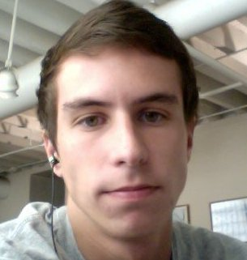

About Me
Brian grew up in Bay Village, a suburb of Cleveland Ohio. He graduated from high school in 2010, and went on to earn an English degree from Ohio University. He has worked in B2B sales and is currently pursuing further education regarding web development from Case Western Reserve Coding Bootcamp.
Brian enjoys getting together with friends and doing just about anything outdoors. He also enjoys playing video game, his guitar, and goig to see live music whenever his favorite bands are in town. He also loves to travel whenever he has the opportunity.
Connect with Me